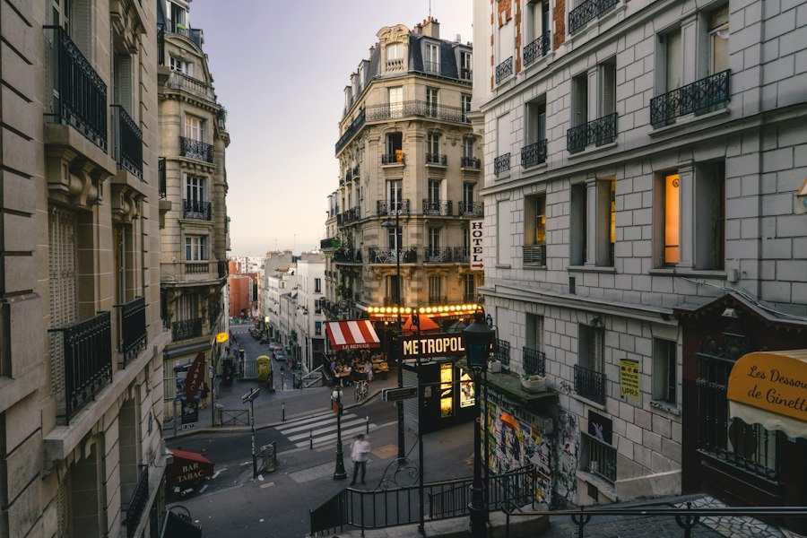

Villes & collectivités
Nirmie relie commerces, lieux publics et points d'intérêt dans un parcours ludique qui donne envie aux habitants de redécouvrir leur territoire.
- Dynamiser le centre-ville
- Valoriser les commerces
- Créer une animation familiale
- Générer du trafic local
- Obtenir un bilan post-animation